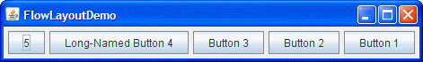

A layout manager is an object that implements theLayoutManagerinterface* and determines the size and position of the components within a container. Although components can provide size and alignment hints, a container's layout manager has the final say on the size and position of the components within the container.This section discusses some of the common tasks related to using layout managers:
It ends with Tips on Choosing a Layout Manager.
- Setting the Layout Manager
- Adding Components to a Container
- Providing Size and Alignment Hints
- Putting Space Between Components
- Setting the Container's Orientation
Setting the Layout Manager
As a rule, the only containers whose layout managers you need to worry about areJPanels and content panes. EachJPanelobject is initialized to use aFlowLayout, unless you specify differently when creating theJPanel. Content panes useBorderLayoutby default. If you don't like the default layout manager that a panel or content pane uses, you're free to change it to a different one.You can set a panel's layout manager using the
JPanelconstructor. For example:After a container has been created, you can set its layout manager using theJPanel panel = new JPanel(new BorderLayout());setLayoutmethod. For example:Container contentPane = frame.getContentPane(); contentPane.setLayout(new FlowLayout());Although we recommend that you use layout managers, you can perform layout without them. By setting a container's layout property to null, you make the container use no layout manager. With this strategy, called absolute positioning, you must specify the size and position of every component within that container. One drawback of absolute positioning is that it doesn't adjust well when the top-level container is resized. It also doesn't adjust well to differences between users and systems, such as different font sizes and locales.
Adding Components to a Container
When you add components to a panel or content pane, the arguments you specify to theaddmethod depend on the layout manager that the panel or content pane is using. For example,BorderLayoutrequires that you specify the area to which the component should be added, using code like this:pane.add(aComponent, BorderLayout.PAGE_START);The how-to section for each layout manager has details on what, if any, arguments you need to specify to the
addmethod. Some layout managers, such asGridBagLayoutandSpringLayout, require elaborate setup procedures. Many layout managers, however, simply place components based on the order they were added to their container.Swing containers other than
JPaneland content panes generally provide API that you should use instead of theaddmethod. For example, instead of adding a component directly to a scroll pane (or, actually, to its viewport), you either specify the component in theJScrollPaneconstructor or usesetViewportView. Because of specialized API like this, you don't need to know which layout manager (if any) many Swing containers use. (For the curious: scroll panes happen to use a layout manager namedScrollPaneLayout.)For information about how to add components to a specific container, see the how-to page for the container. You can find the component how-to pages using A Visual Index to the Swing Components.
Providing Size and Alignment Hints
Sometimes you need to customize the size hints that a component provides to its container's layout manager, so that the component will be laid out well. You can do this by specifying one or more of the minimum, preferred, and maximum sizes of the component. You can invoke the component's methods for setting size hints —setMinimumSize,setPreferredSize, andsetMaximumSize. Or you can create a subclass of the component that overrides the appropriate getter methods —getMinimumSize,getPreferredSize, andgetMaximumSize. Here is an example of making a component's maximum size unlimited:component.setMaximumSize(new Dimension(Integer.MAX_VALUE, Integer.MAX_VALUE));Many layout managers don't pay attention to a component's requested maximum size. However,
BoxLayoutandSpringLayoutdo.Besides providing size hints, you can also provide alignment hints. For example, you can specify that the top edges of two components should be aligned. You set alignment hints either by invoking the component's
setAlignmentXandsetAlignmentYmethods, or by overriding the component'sgetAlignmentXandgetAlignmentYmethods. Although most layout managers ignore alignment hints,BoxLayouthonors them. You can find examples of setting the alignment in How to Use BoxLayout.
Putting Space Between Components
Three factors influence the amount of space between visible components in a container:
- The layout manager
- Some layout managers automatically put space between components; others don't. Some let you specify the amount of space between components. See the how-to page for each layout manager for information about spacing support.
- Invisible components
- You can create lightweight components that perform no painting, but that can take up space in the GUI. Often, you use invisible components in containers controlled by
BoxLayout. See How to Use BoxLayout for examples of using invisible components.- Empty borders
- No matter what the layout manager, you can affect the apparent amount of space between components by adding empty borders to components. The best candidates for empty borders are components that typically have no default border, such as panels and labels. Some other components might not work well with borders in some look-and-feel implementations, because of the way their painting code is implemented. For information about borders, see How to Use Borders.
Setting the Container's Orientation
This website is written in English, with text that runs from left to right, and then top to bottom. However, many other languages have different orientations. The componentOrientation property provides a way of indicating that a particular component should use something different from the default left-to-right, top-to-bottom orientation. In a component such as a radio button, the orientation might be used as a hint that the look and feel should switch the locations of the icon and text in the button. In a container, the orientation is used as a hint to the layout manager.To set a container's orientation, you can use either the
Component-defined methodsetComponentOrientationor, to set the orientation on the container's children as well,applyComponentOrientation. The argument to either method can be a constant such asComponentOrientation.RIGHT_TO_LEFT, or it can be a call to theComponentOrientationmethodgetOrientation(Locale). For example, the following code causes allJComponents to be initialized with an Arabic-language locale, and then sets the orientation of the content pane and all components inside it accordingly:Here are two pictures showing howJComponent.setDefaultLocale(new Locale("ar")); JFrame frame = new JFrame(); ... Container contentPane = frame.getContentPane(); contentPane.applyComponentOrientation( ComponentOrientation.getOrientation( contentPane.getLocale()));FlowLayoutlays out components in containers that are exactly the same, except for their orientation.
Default orientation (left-to-right)
The standard layout managers that support component orientation are
Right-to-left orientationFlowLayout,BorderLayout,BoxLayout,GridBagLayout, andGridLayout.

Tips on Choosing a Layout Manager
Layout managers have different strengths and weaknesses. This section discusses some common layout scenarios and which layout managers might work for each scenario. If none of the layout managers we discuss is right for your situation, feel free to use other layout managers that you write or find. Also keep in mind that flexible layout managers such asGridBagLayoutandSpringLayoutcan fulfill many layout needs.
- Scenario: You need to display a component in as much space as it can get.
- If it's the only component in its container, use
GridLayoutorBorderLayout. Otherwise,BorderLayoutorGridBagLayoutmight be a good match.If you use
BorderLayout, you'll need to put the space-hungry component in the center. WithGridBagLayout, you'll need to set the constraints for the component so thatfill=GridBagConstraints.BOTH. Another possibility is to useBoxLayout, making the space-hungry component specify very large preferred and maximum sizes.
- Scenario: You need to display a few components in a compact row at their natural size.
- Consider using a
JPanelto group the components and using either theJPanel's defaultFlowLayoutmanager or theBoxLayoutmanager.SpringLayoutis also good for this.
- Scenario: You need to display a few components of the same size in rows and columns.
GridLayoutis perfect for this.
- Scenario: You need to display a few components in a row or column, possibly with varying amounts of space between them, custom alignment, or custom component sizes.
BoxLayoutis perfect for this.
- Scenario: You need to display aligned columns, as in a form-like interface where a column of labels is used to describe text fields in an adjacent column.
SpringLayoutis a natural choice for this. TheSpringUtilitiesclass used by several Tutorial examples defines amakeCompactGridmethod that lets you easily align multiple rows and columns of components.
- Scenario: You have a complex layout with many components.
- Consider either using a very flexible layout manager such as
GridBagLayoutorSpringLayout, or grouping the components into one or moreJPanels to simplify layout. If you take the latter approach, eachJPanelmight use a different layout manager.
*Way back in JDK 1.1 a second interface,
LayoutManager2, was introduced.
LayoutManager2 extends
LayoutManager,
providing support for maximum size and alignment.
Many layout managers don't use those features,
however.